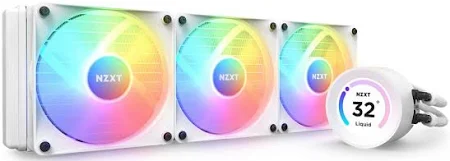
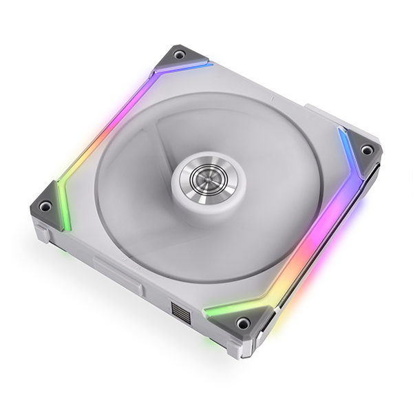
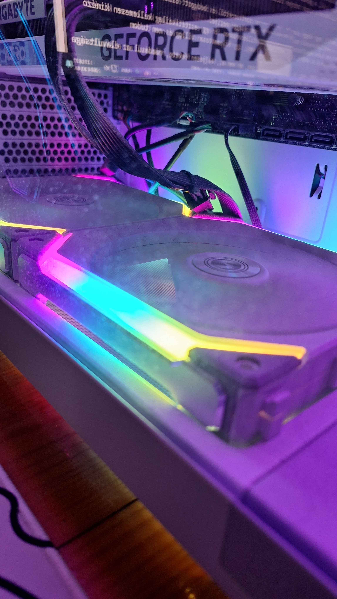
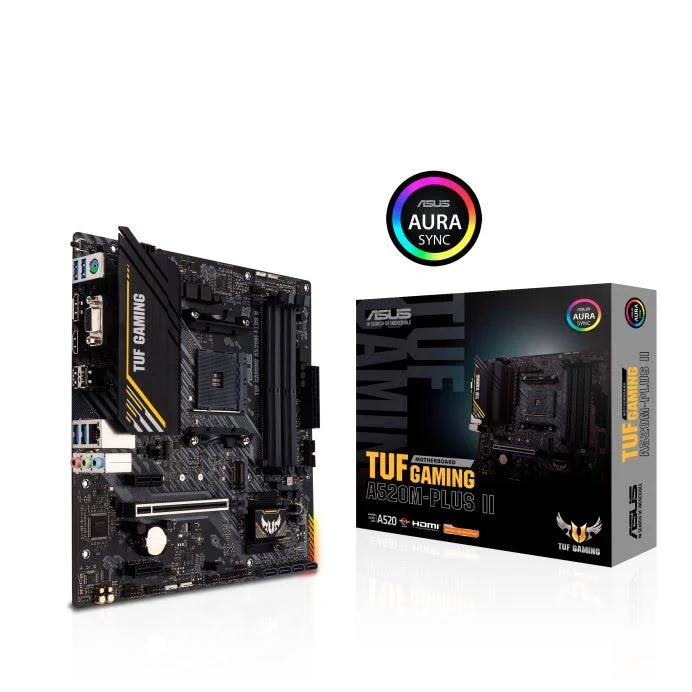

Gépépités
1. Alkatrészválasztás
Még tavasszal elkezdtem alkatrészeket válogatni, és egy ilyen mid-range configgra jutottam. Ezt aztán megrendeltük, ventillátor és CPU hűtő nélkül. Erre vártam egy darabig, aztán egyik reggel megjött.
2. Aktiv és passziv hűtés
Amikor eljött az ideje, akkor megrendeltem az alábbiakat:
- Ventillátor
- 2x Lian Li sl140, ezek a gépház alján található ventillátorslotba kerültek. Ezen kivül vettem egy Lian Li sl120 v2-es ventillátort is, ami hátra került.
- CPU hűtő AIO
-
- Ez egy 360mm-es Kraken 360 RGB, ami egy nagy heatsink, melyre 3 ventillátor kerül. A heatsinkből 2 cső fut ki, mely folyadékot keringet egy pumpába, mely átviszi a hűvöset a processzorba termális paszta segitségével.


Szerelés
Mivel a gépet összeépitve vettem, de a hütőelemeket utólag, ezért ezeket nekem kellett beszerelnem. Azonban úgytűnt, hogy az IPON-os szakemberek nagyon rosszul kötötték be a kábeleket, és ez egy 10-órás kábel- és port keresési rémálomhoz vezetett csak azért, hogy beszereljek egy hűtőt és 3 ventillátort. Ezen kivül, a gépház amit vásároltam, nagyon szigorú atekintetben, hogy mekkora ventillátorok férnek a slotokba. Ezért most az alsó ventillátorok a slotok tetején csücsülnek.
Felmerülő problémák
- Az általam választott alaplap kiderült, hogy eléggé elavult, igy bizonyos szoftverektől és bedugott eszközöktől teljesen kifagy, igy az egész gép is. Ilyen szoftver a ventillátorkezelő szoftver, amtől a gépem eléggé megijed.
- Ez előző következtében a fényeket nem tudom megváltoztatni a meglévő ventillátoraimon. Én egy esztétikailag kellemesen kinéző gépet vásároltam, amiben fehérnek képzeltem el az ARGB-t, de a preset szivárvány, igy folyamatosan villog és nem tudom megváltoztatni.
- Azért mert esztétikus gépem van, fontos LENNE, hogy az alaplap is az legyen, de nem az, teljesen fekete, ráadásul az elavultsága miatt a chipek az alaplapon nincsenek eltakarva, igy nem túl szép. Az egész gépem fehér, csak ez nem.


Ahogy látjuk, eléggé meggondolatlan voltam az alaplap kiválasztásakor.
Igy most azon vagyok, hogy vegyek egy új alaplapot. Ebből is tanultam!